Capítulo 5 Produção gráfica e comunicação visual
Assista este conteúdo em Cap 4 - Produção gráfica e comunicação visual - Parte 1 no PVANet
R é capaz de produzir uma grande variedade de gráficos em alta qualidade para publicação e impressão. Tipos básicos de gráficos ( barplot, boxplot, scatterplot, maps e etc). É bastante simples produzir gráficos tradicionais no R, especialmente no nível mais básico e cada gráfico pode ser personalizado para atender as demandas do usuário.
Gráficos R
Fonte: Revolutions
Os comando gráficos podem ser divididos em 3 categorias Mello and Peternelli (2013);
1. comando de alto nível – criam gráficos completos;
2. comando de baixo nível – adicionam informações a gráficos já existentes;
3. comando interativos – permitem ao usuário a interação com a janela gráfica.
Os gráficos são plotados na aba Plots.

Painel de plotagem
O R possui algumas funções nativas para a criação de figuras, tal como plot e hist.
De acordo com Perlin (2018) essas e outras funções nativas são restritivas e não recomendadas com customização pouco intuitivas com resultado final pouco atrativo.
Eu pessoalmente nunca experimentei tal limitação e, arrisco a dizer respeitosamente que, tudo que você quer fazer com funções do ggplot2 pode ser feito com funções nativas, basta saber manipular corretamente os argumentos. Mas tenho que concordar que com ggplot2 as funções são mais simples e objetivas. De qualquer forma fica o alerta para possíveis limitações.
5.1 Utilizando funções nativas
As funções nativas do R para prdoução de gráficos e plotagem são armazenadas pelos pacotes graphics e grDevices que carregam atutomaticamente sempre que o R é iniciado Peng (2020a).
graphics: Contém as funções básicas do ambiente gráfico (plot, hist, boxplot e etc)
grDevices: É responsável por permitir a comunição dos gráficos produzidos com outras linguagens de tratameneto de imagens ( X11, .pdf, PostScript, PNG e etc).
Os gráficos básicos no R possuem uma grande variedade de parâmetros que nos auxiliam na produção e/ou “melhoramento” de um gráfico pré-concebido através da adição de novas informações.
5.1.1 boxplot - boxplot()
São gráficos muito úteis que conseguem concatenar e mostrar uma série de informações de uma só vez. Muito úteis principalmente quando temos uma variável categórica associada.
No R estes gráficos podem ser feitos utilizando o comando boxplot(). A fórmula tem a forma de eixo-y ~ eixo-x.
Vamos utilizar o pacote datasets e os dados InsectSprays que mostra dados de um experimento de agricultura onde insetos foram tratados com diferentes inseticidas.
A hipótese é que quanto mais eficiente o inseticida ( spray ) menos insetos ( count ) sobrevivem, ou seja, count é em função de spray.
No boxplot cada caixa mostra os dados observados de cada tipos de spray (A até F) e vemos que os inseticidas C, D e E são os mais eficientes.
Temos a mediana representada pela linha preta, os limites inferior e superior que representam o primeiro e o terceiro quartil (50% dos dados). As linhas superiores e inferiores correspondem a 2 desvios-padrão e os pontos fora das caixas são os outliers.
Para mais detalhes sobre interpretação do boxplot procure um livro de estatística ou acesse a internet como em Boxplot .
data(InsectSprays)
str(InsectSprays)## 'data.frame': 72 obs. of 2 variables:
## $ count: num 10 7 20 14 14 12 10 23 17 20 ...
## $ spray: Factor w/ 6 levels "A","B","C","D",..: 1 1 1 1 1 1 1 1 1 1 ...head(InsectSprays)## count spray
## 1 10 A
## 2 7 A
## 3 20 A
## 4 14 A
## 5 14 A
## 6 12 Atail(InsectSprays)## count spray
## 67 13 F
## 68 10 F
## 69 26 F
## 70 26 F
## 71 24 F
## 72 13 Fboxplot(count ~ spray,data = InsectSprays)
Experimente adicionar o argumento notch=T.
5.1.2 histograma - hist()
Histograma é um tipo de gráfico que combina várias barras verticais representando as frequências das variáveis.
hist(InsectSprays$count,right=T, breaks=10, include.lowest=T,
col= "orange", border="red", adj=0, col.axis="blue")
Veja que no histograma gerado nós adicionais alguns argumentos. Estes comandos introduzem variações no gráfico gerado que auxiliam na visualização das informações.
right=T: Considera valores fechado à direita (já é o padrão).
breaks=30: Define o intervalo das classes no eixo x (abscissas) controlando a espessura das barras.
include.lowest=T: Inclui os valor extremos do vetor.
col="orange: Define a cor do preenchimento da forma.
border=red: Define a cor da borda.
adj=0: Ajusta o alinhamento dos nomes dos eixos.
col.axis=blue: Define a cor dos eixos.
5.1.3 Gráfico de barras - barplot()
Linhas verticais descrevendo valores (barplot()).
Exemplo abaixo veio do stackoverflow Texture in barplot for 7 bars in R?. Aqui temos gráficos de barras com texturas.
# data generation ---------------------------------------------------------
set.seed(1)
mat <- matrix(runif(4*7, min=0, max=10), 7, 4)
rownames(mat) <- 1:7
colnames(mat) <- LETTERS[1:4]
# plotting settings -------------------------------------------------------
ylim <- range(mat)*c(1,1.5)
angle1 <- rep(c(45,45,135), length.out=7)
angle2 <- rep(c(45,135,135), length.out=7)
density1 <- seq(5,35,length.out=7)
density2 <- seq(5,35,length.out=7)
col <- 1 # rainbow(7)
# plot --------------------------------------------------------------------
op <- par(mar=c(3,3,1,1))
barplot(mat, beside=TRUE, ylim=ylim, col=col, angle=angle1,
density=density1)
barplot(mat, add=TRUE, beside=TRUE, ylim=ylim, col=col,
angle=angle2, density=density2)
legend("top", legend=1:7, ncol=7, fill=TRUE, col=col,
angle=angle1, density=density1)
par(bg="transparent")
legend("top", legend=1:7, ncol=7, fill=TRUE, col=col,
angle=angle2, density=density2) 
par(op)5.1.4 Gráfico de setores (pizza) - pie()
Divide um círculo em setores de acorco com os valores de cada categoria.
pie(1:15, col = rainbow(15)) 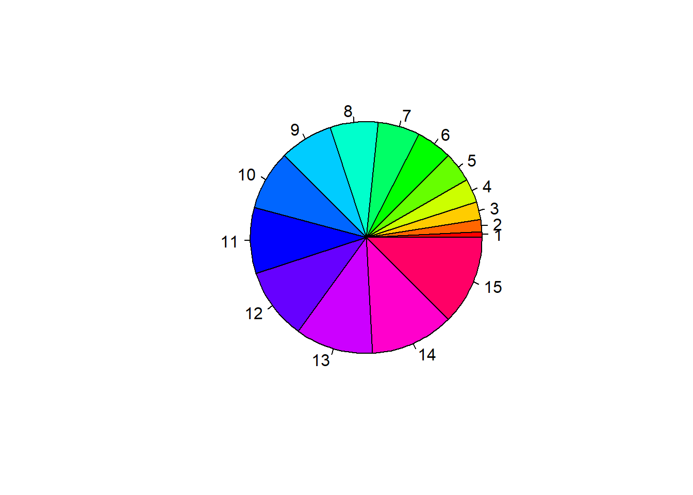
col=rainbow(15)= Preenche as áreas internas do gráfico com 15 cores utilizando a paleta de cores do arco-íris.
5.1.5 Função plot()
A função plot() é uma função genérica amplamente utilizada para gerar gráficos. Nós vamos utilizá-la muito de agora em diante.
plot()é provavelmente o comando de alto nível mais simples para criação de gráficos. Com ele podemos visualizar desde gráficos de dispersão até imagens de satélites.
O tipo de plot a ser gerado depende da classe (class(x)) do primeiro argumento(x).
Se x e y são vetores (
plot(x, y)) produzirá um gráfico de dispersão ( scatter plot).Se x é um vetor numérico
plot(x)produzirá um gráfico dos valores de X contra os valores dos índices.Se x é uma série temporal
plot(x)produzirá um gráfico de uma série temporal.Se x é um factor,
plot(x)produzirá um bar plot de x.Se x é um factor e y um vetor numérico
plot(x,y)produzirá um boxplot de y para cada nível de x.Se x é um data.frame, y é qualquer objeto e expr é uma lista de nomes de objetos separados por “+” (por exemplo, a + b + c).
plot(df)eplot(~ expr)produzirão gráficos de distribuição das variáveis em uma tabela quadro de dados (1º plot) ou de vários objetos nomeados (2° plot).plot(y ~ expr)produzirá um plot de y em relação a cada objeto nomeado em expr.
v<-1:20
m<-v^2
plot(v,m)
points(rev(v),m) # points () adiciona pontos a um gráfico já existente
lines(v,400-m, col="red") #lines() adiciona linhas a um gráfico já existente
text(10,200, "Anuncie aqui")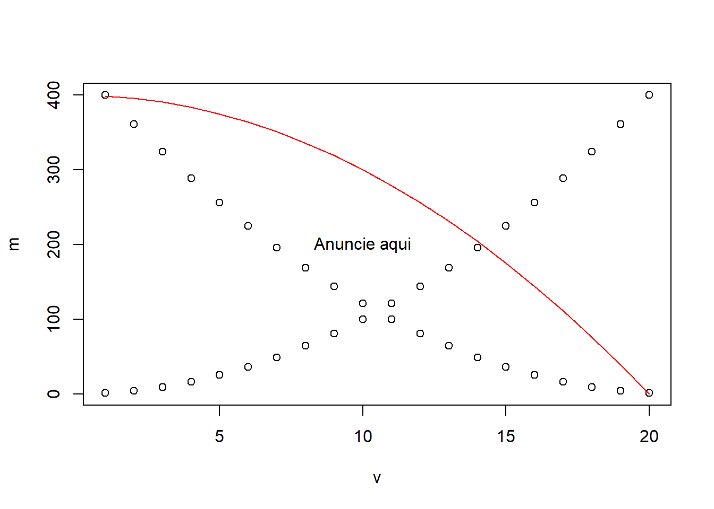
X<-c(2, 3, 4, 5, 6, 7) #X maiúsculos mesmo
Y<-c(15, 46, 56, 15, 81, 11) #Y maiúsculo mesmo
Nomes<-LETTERS[1:6]
Cidades<-data.frame(X, Y, row.names=Nomes)
Cidades## X Y
## A 2 15
## B 3 46
## C 4 56
## D 5 15
## E 6 81
## F 7 11plot(Cidades)
identify(Cidades)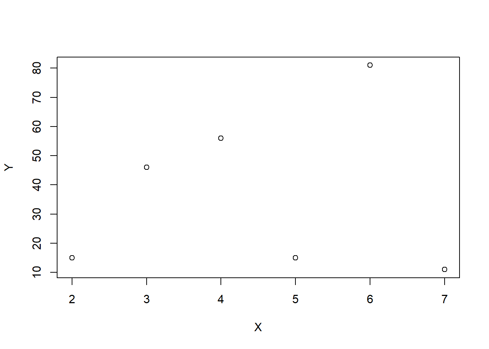
## integer(0)5.1.6 Formatando eixos
Os exemplos anteriores serviram apenas para ilustração, mas se quisermos algo para publicação ou qualquer comunicação de melhor qualidade temos que trabalhar um pouco mais.
Inicialmente podemos inserir os título e nomear os eixos.
main=: Insere um título no gráfico;
xlab=: Adiciona título ao eixo x do gráfico;
ylab=: Adiciona título ao eixo y do gráfico.
plot(trees$Girth, trees$Height,main="Relação Altura x Circunferência", xlab="Circunferência da árvore (polegadas)",
ylab="Altura da árvore (pés)")
Nesse caso nós manipulamos os tamanhos dos eixos x e y concatenando vetores para xlim e ylim respectivamente.
xlim=: Determina o intervalo do eixo x.
ylim=: Determina o intervalo do eixo y.
plot(trees$Girth, trees$Height,main="Relação Altura x Circunferência", xlab="Circunferência da árvore (polegadas)",
ylab="Altura da árvore (pés)", xlim=c(5,25), ylim=c(60,90))
Os rótulos dos eixos são geralmente posicionados na horizontal, no entanto os rótulos podem ser ajustados para o critério do usuário utilizando o argumento las=x (x=valor inteiro entre 0 e 3).
* 1: sempre paralelo ao eixo (default)
* 2: sempre horizontal
* 3: sempre perpendicular ao eixo
* 4: sempre vertical
Podemos também plotar vários gráficos na mesma janela. Para isso precismamos controlar o painel com o comando par() combinado com mfrowou mfcol.
mfrow=(x,y): Distribui os gráficos em linhas em que x é o número de linhas e y o número de colunas.
mfcol=(x,y): Distribui os gráficos em colunas em que x é o número de linhas e y o número de colunas.
par(mfrow=c(2,2))
plot(trees$Girth, trees$Height,main="1° Relação Altura x Circunferência", xlab="Circunferência da árvore (polegadas)",
ylab="Altura da árvore (pés)", xlim=c(5,25),
ylim=c(60,90),col="red",las=0)
plot(trees$Girth, trees$Height,main="2° Relação Altura x Circunferência", xlab="Circunferência da árvore (polegadas)",
ylab="Altura da árvore (pés)", xlim=c(5,25),
ylim=c(60,90),col="blue",las=1)
plot(trees$Girth, trees$Height,main="3° Relação Altura x Circunferência", xlab="Circunferência da árvore (polegadas)",
ylab="Altura da árvore (pés)", xlim=c(5,25),
ylim=c(60,90),col="black",las=2)
plot(trees$Girth, trees$Height,main="4° Relação Altura x Circunferência", xlab="Circunferência da árvore (polegadas)",
ylab="Altura da árvore (pés)", xlim=c(5,25),
ylim=c(60,90),col="purple",las=3)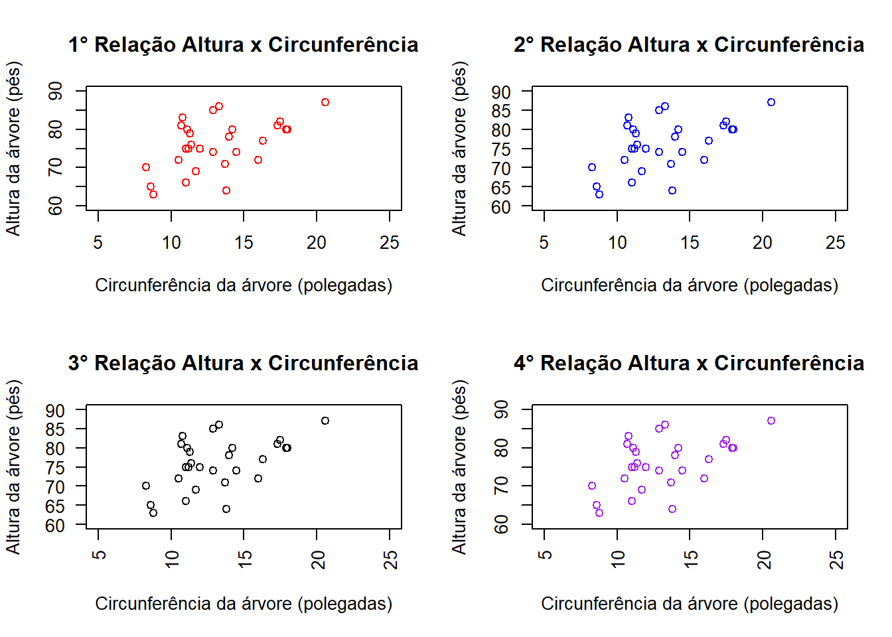
par(mfcol=c(2,2))
plot(trees$Girth, trees$Height,main="1° Relação Altura x Circunferência", xlab="Circunferência da árvore (polegadas)",
ylab="Altura da árvore (pés)", xlim=c(5,25),
ylim=c(60,90),col="red",las=0)
plot(trees$Girth, trees$Height,main="2° Relação Altura x Circunferência", xlab="Circunferência da árvore (polegadas)",
ylab="Altura da árvore (pés)", xlim=c(5,25),
ylim=c(60,90),col="blue",las=1)
plot(trees$Girth, trees$Height,main="3° Relação Altura x Circunferência", xlab="Circunferência da árvore (polegadas)",
ylab="Altura da árvore (pés)", xlim=c(5,25),
ylim=c(60,90),col="black",las=2)
plot(trees$Girth, trees$Height,main="4° Relação Altura x Circunferência", xlab="Circunferência da árvore (polegadas)",
ylab="Altura da árvore (pés)", xlim=c(5,25),
ylim=c(60,90),col="purple",las=3)
Podemos alterar também os símbolos dos gráficos
Por padrão o R usa círculos abertos nos gráficos. Isso pode ser alterado de acordo com preferência do usuário usando o argumento pch = x (x=valor inteiro entre 0 e 25) dentro do plot().

par(mfcol=c(2,2))
plot(trees$Girth, trees$Height,main="1° Relação Altura x Circunferência", xlab="Circunferência da árvore (polegadas)",
ylab="Altura da árvore (pés)", xlim=c(5,25),
ylim=c(60,90),col="red",las=0, pch=2)
plot(trees$Girth, trees$Height,main="2° Relação Altura x Circunferência", xlab="Circunferência da árvore (polegadas)",
ylab="Altura da árvore (pés)", xlim=c(5,25),
ylim=c(60,90),col="blue",las=1,pch=4)
plot(trees$Girth, trees$Height,main="3° Relação Altura x Circunferência", xlab="Circunferência da árvore (polegadas)",
ylab="Altura da árvore (pés)", xlim=c(5,25),
ylim=c(60,90),col="black",las=2,pch=8)
plot(trees$Girth, trees$Height,main="4° Relação Altura x Circunferência", xlab="Circunferência da árvore (polegadas)",
ylab="Altura da árvore (pés)", xlim=c(5,25),
ylim=c(60,90),col="purple",las=3,pch=16)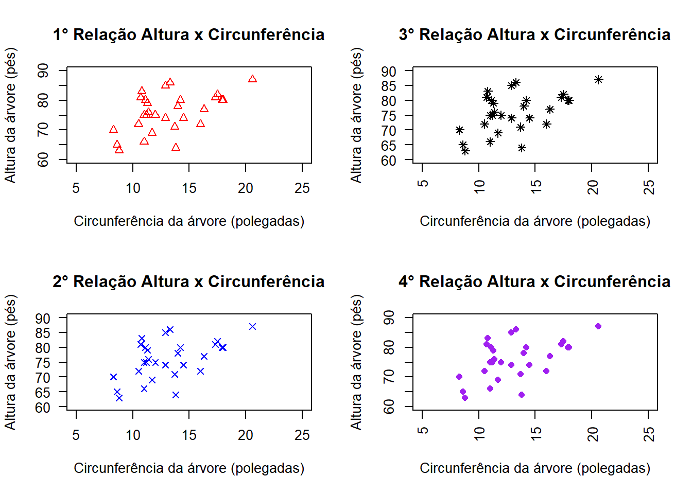
O tamanho dos símbolos também pode ser ajustado utilizando o argumento cex=x.
par(mfcol=c(2,2))
plot(trees$Girth, trees$Height,main="1° Relação Altura x Circunferência", xlab="Circunferência da árvore (polegadas)",
ylab="Altura da árvore (pés)", xlim=c(5,25),
ylim=c(60,90),col="red",las=0, pch=2, cex=0.3)
plot(trees$Girth, trees$Height,main="2° Relação Altura x Circunferência", xlab="Circunferência da árvore (polegadas)",
ylab="Altura da árvore (pés)", xlim=c(5,25),
ylim=c(60,90),col="blue",las=1,pch=4, cex=0.8)
plot(trees$Girth, trees$Height,main="3° Relação Altura x Circunferência", xlab="Circunferência da árvore (polegadas)",
ylab="Altura da árvore (pés)", xlim=c(5,25),
ylim=c(60,90),col="black",las=2,pch=8, cex=1.3)
plot(trees$Girth, trees$Height,main="4° Relação Altura x Circunferência", xlab="Circunferência da árvore (polegadas)",
ylab="Altura da árvore (pés)", xlim=c(5,25),
ylim=c(60,90),col="purple",las=3,pch=16, cex=1.8)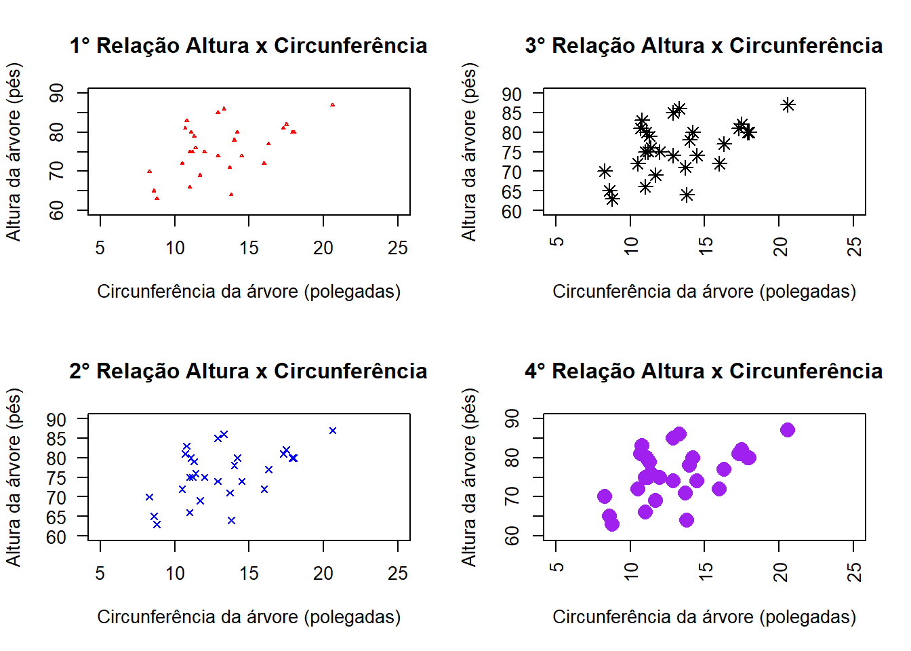
O usuário não precisa unicamente utilizar os símbolos de pch para fazer seus gráficos, a conexão entres os pontos podem ser importante em alguns casos acrescentando o argumento type="x" (x pode ser p, l, b, c, o, h, s, S, n).
- “p” para pontos;
- “l” para linhas;
- “b” para ambos;
- “c” apenas as linhas sem os pontos;
- “o” para ambos sobrepostos;
- “h” para tipo histograma (ou “alta densidade”) linhas verticais;
- “s” para degraus;
- “S” para outros tipos de degraus;
- “n” sem plot;
par(mfcol=c(3,3))
plot(trees$Girth, trees$Height,main="1° Relação Altura x Circunferência", xlab="Circunferência da árvore (polegadas)",
ylab="Altura da árvore (pés)", xlim=c(5,25),
ylim=c(60,90),col="red",las=0, cex=1, type="p")
plot(trees$Girth, trees$Height,main="2° Relação Altura x Circunferência", xlab="Circunferência da árvore (polegadas)",
ylab="Altura da árvore (pés)", xlim=c(5,25),
ylim=c(60,90),col="blue",las=1,cex=1, type="l")
plot(trees$Girth, trees$Height,main="3° Relação Altura x Circunferência", xlab="Circunferência da árvore (polegadas)",
ylab="Altura da árvore (pés)", xlim=c(5,25),
ylim=c(60,90),col="black",las=2, cex=1,type="b")
plot(trees$Girth, trees$Height,main="4° Relação Altura x Circunferência", xlab="Circunferência da árvore (polegadas)",
ylab="Altura da árvore (pés)", xlim=c(5,25),
ylim=c(60,90),col="purple",las=3,cex=1,type="c")
plot(trees$Girth, trees$Height,main="5° Relação Altura x Circunferência", xlab="Circunferência da árvore (polegadas)",
ylab="Altura da árvore (pés)", xlim=c(5,25),
ylim=c(60,90),col="red",las=0, cex=1, type="o")
plot(trees$Girth, trees$Height,main="6° Relação Altura x Circunferência", xlab="Circunferência da árvore (polegadas)",
ylab="Altura da árvore (pés)", xlim=c(5,25),
ylim=c(60,90),col="blue",las=1,cex=1, type="h")
plot(trees$Girth, trees$Height,main="7° Relação Altura x Circunferência", xlab="Circunferência da árvore (polegadas)",
ylab="Altura da árvore (pés)", xlim=c(5,25),
ylim=c(60,90),col="black",las=2, cex=1,type="s")
plot(trees$Girth, trees$Height,main="8° Relação Altura x Circunferência", xlab="Circunferência da árvore (polegadas)",
ylab="Altura da árvore (pés)", xlim=c(5,25),
ylim=c(60,90),col="purple",las=3,cex=1,type="S")
plot(trees$Girth, trees$Height,main="9° Relação Altura x Circunferência", xlab="Circunferência da árvore (polegadas)",
ylab="Altura da árvore (pés)", xlim=c(5,25),
ylim=c(60,90),col="purple",las=3,cex=1,type="n")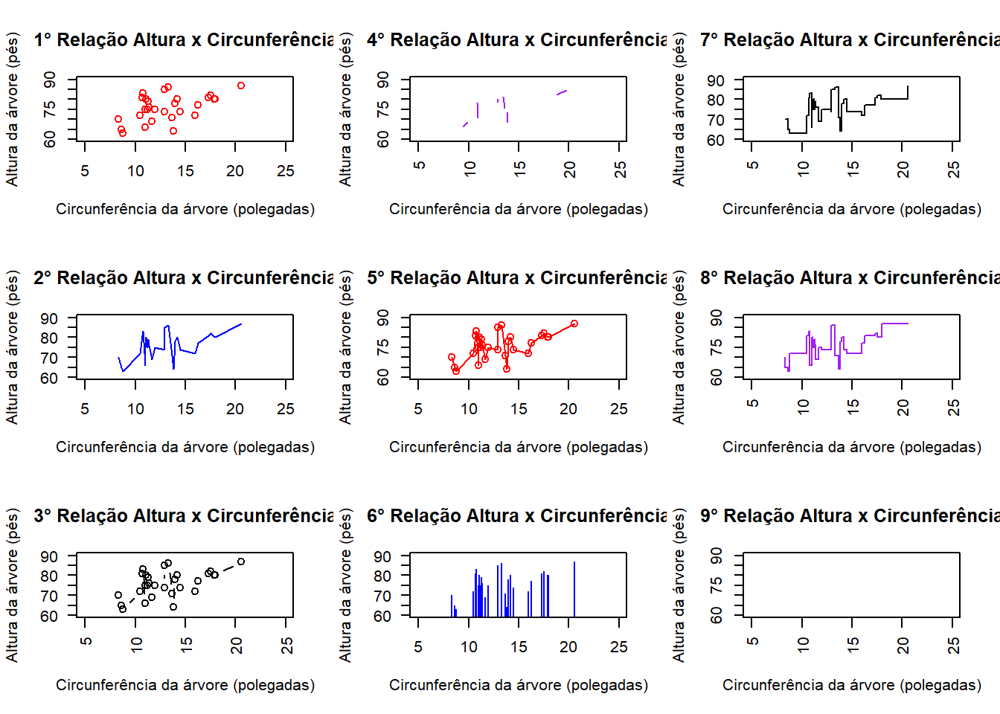
Os gráficos podem também ser feitos por diferentes tipos de linhas. Uma vez defino que ele será do tipo l por xemplo (type="l") podemos variar como a linha será apresentada com lty=x (x = número de 0 a 6).
Experimente acrescentar o comando lwd=x (x é um número) para ir variando a espessura da linha.
Fonte: sthda
{kind=link}
par(mfcol=c(3,2))
# Já que lty = 0 produz uma gráfico em branco não vamos mostrá-lo.
for(i in 1:6){
plot(trees$Girth, trees$Height,main=paste(i,"Relação Altura x Circunferência"), xlab="Circunferência da árvore (polegadas)",
ylab="Altura da árvore (pés)", xlim=c(5,25),
ylim=c(60,90),col="red",las=0, cex=1, type="l",lty=i)
legend("bottomright",c(paste("lty=",i)),col=c("red"))
}
Podemos também fazer a sobreposição de gráficos ou adicionar elementos em um gráfico existente.
par(new=T): habilita a sobreposição no mesmo painel de um outro gráfico.
Lembre-se de desativar os outros parâmetros como eixos, labels, nomes e etc. Deixe apenas os pontos e informações do eixo necessário.
axes=FALSE: Desativa a inclusão dos eixos
xlab="" e ylab="": Deixa os labels dos eixos vazios.
plot(trees$Girth, trees$Height,main="Relação Altura x Circunferência x Volume", xlab="Circunferência da árvore (polegadas)",ylab="Altura da árvore (pés)",xlim=c(5,25),
ylim=c(60,90), las=1, pch=16, col="springgreen")
par(new=TRUE)
plot(trees$Girth, trees$Volume, axes=FALSE, xlab="", ylab="",
pch=4, col="blue")
Veja no gráfico acima que o eixo secundário da informação voluma não foi incluído por isso precisamos adicioná-lo. Contudo antes de adicioná-lo, vamos ter que ajustar o painel, caso contrário ele será plotado, mas não aparecerá.
Precisamos entender antes de tudo que a região de plotagem é possui 4 lados (4 margens) numeradas da seguinte forma.
- 1 - inferior
- 2 - esquerda
- 3 - superior
- 4 - direita
Fonte: http://applied-r.com/
{kind=link}
O tamanho destas margens podem ser controladas utilizando o argumento mar=c(A,B,C,D) em que c(A, B, C e D) é um vetor numérico que determina o tamanho das margens referentes à 1ª, 2ª, 3ª e 4ª posição, respectivamente.
Vamos liberar um espaço à direita para adicionar um eixo secundário no exemplo anterior.
O eixo secundário é inserido “ativando” a margem 4 com comando axis(side=4, las=1) e em seguinda, acrescentando as informaçõpes necessárias com mtext(side=4, line=2.5, "Volume da madeira (pés cúbicos)").
side=4: Indica que as informações serão inseridas no lado 4.
line=2.5: Indica a posição onde o texto será inserio no lado 4.
par(mar=c(4, 4, 2, 4))
plot(trees$Girth, trees$Height,main="Relação Altura x Circunferência x Volume", xlab="Circunferência da árvore (polegadas)",
ylab="Altura da árvore (pés)",xlim=c(5,25),
ylim=c(60,90), las=1, pch=16, col="springgreen")
par(new=TRUE)
plot(trees$Girth, trees$Volume, axes=FALSE, xlab="", ylab="",
pch=4, col="blue")
axis(side=4, las=1)
mtext(side=4, line=2.5, "Volume da madeira (pés cúbicos)")
Podemos adicionar informações fora do gráfico (como título do eixo secundário) de uma outra forma.
Para isto precisamos determinar xpd=T que viabiliza utilizar as margens externas do gráfico atual (padrão é xpd=F).
Caso determine xpd=NA você pode utilizar qualquer região da área de plotagem.
par(oma=c(0,0,4,3)): oma (Outer Margin Area) - especifica que as margens 3 e 4 terão 4 e 3 linhas, respectivamente.
Investigue também os argumentos omi, mai, mgp, outer e omd.
par(mar=c(4, 4, 2, 4),par(oma=c(0,0,4,3)))
plot(trees$Girth, trees$Height,main="Relação Altura x Circunferência x Volume", xlab="Circunferência da árvore (polegadas)",
ylab="Altura da árvore (pés)",xlim=c(5,25),
ylim=c(60,90), las=1, pch=16, col="springgreen")
par(new=TRUE)
plot(trees$Girth, trees$Volume, axes=FALSE, xlab="", ylab="", pch=4, col="blue")
axis(side=4, las=1)
#mtext(side=4, line=2.5, "Volume da madeira (pés cúbicos)")
text(22.6, 70, adj=0, srt=-90, " Volume da madeira (pés cúbicos)", xpd=TRUE)
Pesquise por outer=T.
A legenda pode ser adicionada com argumento legend().
bty="n": não permite desenhar uma caixa em torno da legenda.
\n : Permite quebrar o texto como no título agora inserido com comando title().
cex.main=: Tamanho da fonte
font.main= Tipo da fonte
par(mfrow=c(1,2),mar=c(2, 2, 2, 2),par(oma=c(1,1,1,1)))
plot(trees$Girth, trees$Height, xlab="Circunferência da árvore (polegadas)",
ylab="Altura da árvore (pés)",xlim=c(5,25),
ylim=c(60,90), las=1, pch=16, col="springgreen")
title("Medidas de altura, diâmentro e\n volume para 31 cerejeiras", cex.main=0.5,font.main=2)
par(new=TRUE)
plot(trees$Girth, trees$Volume, axes=FALSE, xlab="", ylab="",
pch=4, col="blue")
axis(side=4, las=1)
#mtext(side=4, line=2.5, "Volume da madeira (pés cúbicos)")
text(25, 70, adj=0, srt=-90, " Volume da madeira (pés cúbicos)",
xpd=TRUE)
legend("topleft", c("Altura da árvore", "Volume da madeira"),
pch=c(16, 4),col=c("springgreen", "blue"), bty="n")
#####################
plot(trees$Girth, trees$Height,xlab="Circunferência da árvore (polegadas)",
ylab="Altura da árvore (pés)",xlim=c(5,25),
ylim=c(60,90), las=1, pch=16, col="springgreen")
title("Medidas de altura, diâmentro e\n volume para 31 cerejeiras", cex.main=1,font.main=4)
par(new=TRUE)
plot(trees$Girth, trees$Volume, axes=FALSE, xlab="", ylab="",
pch=4, col="blue")
axis(side=4, las=1)
#mtext(side=4, line=2.5, "Volume da madeira (pés cúbicos)")
text(25, 70, adj=0, srt=-90, " Volume da madeira (pés cúbicos)",
xpd=TRUE)
legend(12,20, c("Altura da árvore", "Volume da madeira"),
pch=c(16, 4), col=c("springgreen", "blue"), bty="n")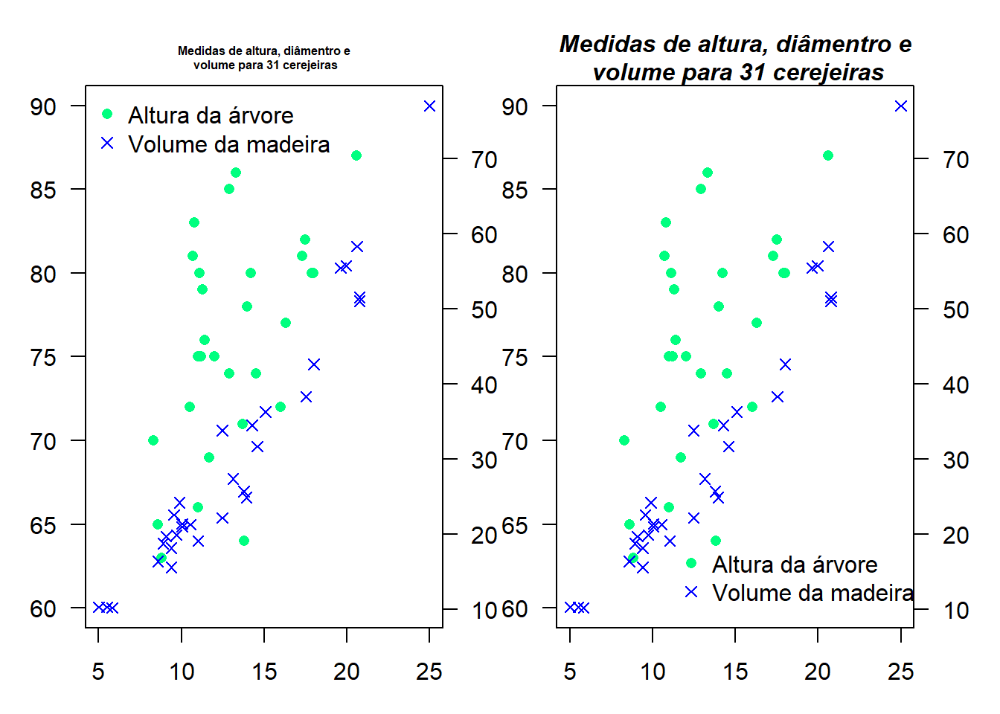
Outra maneira de plotar vários gráficos é manipulando os layouts.
layout.matrix <- matrix(c(2,1, 0, 3), nrow = 2, ncol = 2)
layout(mat = layout.matrix,
heights = c(1, 2), # Altura das duas linhas
widths = c(2, 2)) # Largura das duas colunas
layout.show(3)
layout.matrix <- matrix(c(2,1, 0, 3), nrow = 2, ncol = 2)
layout(mat = layout.matrix,
heights = c(1, 2), # Altura das duas linhas
widths = c(2, 2)) # Largura das duas colunas
plot(trees$Girth, trees$Height, xlab="Circunferência da árvore (polegadas)",ylab="Altura da árvore (pés)",xlim=c(5,25),
ylim=c(60,90), las=1, pch=16, col="springgreen")
title("Medidas de altura, diâmentro e\n volume para 31 cerejeiras", cex.main=1,font.main=2)
par(new=TRUE)
plot(trees$Girth, trees$Volume, axes=FALSE, xlab="", ylab="",
pch=4, col="blue")
axis(side=4, las=1)
#mtext(side=4, line=2.5, "Volume da madeira (pés cúbicos)")
text(25, 70, adj=0, srt=-90, " Volume da madeira (pés cúbicos)",
xpd=TRUE)
legend("topleft", c("Altura da árvore", "Volume da madeira"),
pch=c(16, 4),col=c("springgreen", "blue"), bty="n")
par(mar = c(0, 4, 4, 0))
boxplot(trees$Girth, xaxt = "n",yaxt = "n",
bty = "n",col = "white", frame = FALSE, horizontal = TRUE, main="Boxplot circunferência")
par(mar = c(5, 0, 4, 0))
boxplot(trees$Height,xaxt = "n",yaxt = "n",
bty = "n",col = "white", frame = F,main="Boxplot Altura")
Para salvar os gráficos ou figuras podemos fazê-lo manualmente no painel Plots -> export e escolher o formato de saída bem como as dimensões.
Podemos também exportar as figuras por linhas de comando.
png(filename = "ENG792.Plot.png", width = 480, height = 480)
layout.matrix <- matrix(c(2,1, 0, 3), nrow = 2, ncol = 2)
layout(mat = layout.matrix,
heights = c(1, 2), # Altura das duas linhas
widths = c(2, 2)) # Largura das duas colunas
plot(trees$Girth, trees$Height, xlab="Circunferência da árvore (polegadas)",ylab="Altura da árvore (pés)",xlim=c(5,25),
ylim=c(60,90), las=1, pch=16, col="springgreen")
title("Medidas de altura, diâmentro e\n volume para 31 cerejeiras", cex.main=1,font.main=2)
par(new=TRUE)
plot(trees$Girth, trees$Volume, axes=FALSE, xlab="", ylab="",
pch=4, col="blue")
axis(side=4, las=1)
#mtext(side=4, line=2.5, "Volume da madeira (pés cúbicos)")
text(25, 70, adj=0, srt=-90, " Volume da madeira (pés cúbicos)",
xpd=TRUE)
legend("topleft", c("Altura da árvore", "Volume da madeira"),
pch=c(16,4),col=c("springgreen", "blue"), bty="n")
par(mar = c(0, 4, 4, 0))
boxplot(trees$Girth, xaxt = "n",yaxt = "n",
bty = "n",col = "white", frame = FALSE,
horizontal = TRUE,main="Boxplot circunferência")
par(mar = c(5, 0, 4, 0))
boxplot(trees$Height,xaxt = "n",yaxt = "n",
bty = "n",col = "white", frame = F,main="Boxplot Altura")
dev.off()## png
## 2Para mais exemplos sobre as fontes acesse aqui.
Para saber mais dos parâmetros:
names(par())## [1] "xlog" "ylog" "adj" "ann" "ask"
## [6] "bg" "bty" "cex" "cex.axis" "cex.lab"
## [11] "cex.main" "cex.sub" "cin" "col" "col.axis"
## [16] "col.lab" "col.main" "col.sub" "cra" "crt"
## [21] "csi" "cxy" "din" "err" "family"
## [26] "fg" "fig" "fin" "font" "font.axis"
## [31] "font.lab" "font.main" "font.sub" "lab" "las"
## [36] "lend" "lheight" "ljoin" "lmitre" "lty"
## [41] "lwd" "mai" "mar" "mex" "mfcol"
## [46] "mfg" "mfrow" "mgp" "mkh" "new"
## [51] "oma" "omd" "omi" "page" "pch"
## [56] "pin" "plt" "ps" "pty" "smo"
## [61] "srt" "tck" "tcl" "usr" "xaxp"
## [66] "xaxs" "xaxt" "xpd" "yaxp" "yaxs"
## [71] "yaxt" "ylbias"5.2 Cores no R
O R nativo possui uma grande variedade de cores que podem ser utilizadas e combinadas.
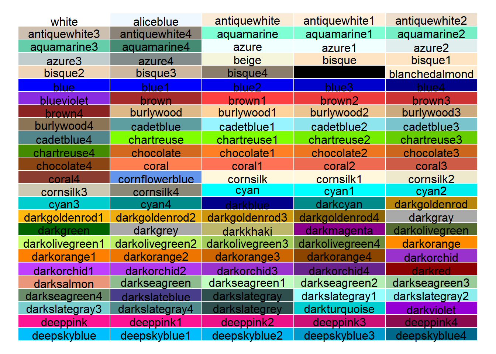
Podemos utilizar cores (cm.colors, rainbow, heat.colors, terrain.colors ou topo.colors) do grDevices.
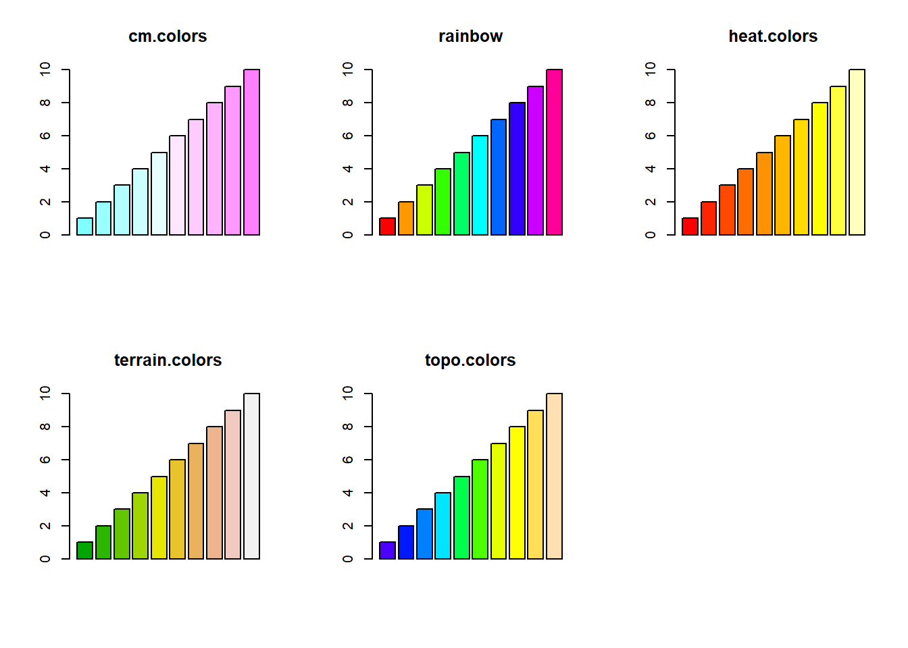
Podemos utilizar pacotes de cores também como RColorBrewer, unikn, viridis
5.2.1 RColorBrewer

5.2.2 unkin
## Warning: package 'unikn' was built under R version 4.1.1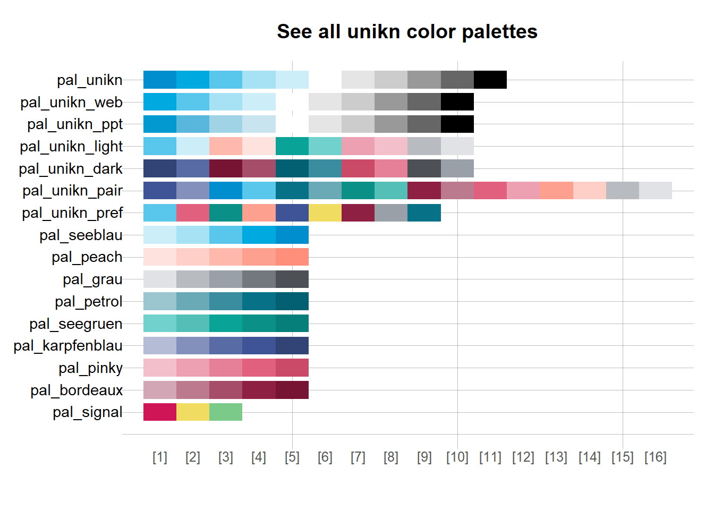
5.2.3 viridis

5.3 Para mais informações utilize o Google ou os documentos abaixo
Uma grande fonte de inspiração para produção de gráficos é o The R Graph Gallery
An Introduction to R Graphics parameters list
Graphical Parameters - cheat sheet
Graphical parameters - STHDA
Styling Base R Graphics
R Base Graphics: An Idiot’s Guide
R Function of the Day - par(mar, mgp, las)
Set or Query Graphical Parameters
An xpd-tion into R plot margins
AN INTRODUCTION TO PATTERNPLOT PACKAGE
Top R Color Palettes to Know for Great Data Visualization
Creating a composite gif with multiple gganimate panels
Leia também Murrel (2011), Venables and Smith (2020), Chang (2020) e Neth (2021)
5.4 ggplot2
Assista este conteúdo em Cap 4 - ggplot2 no PVANet
O pacote ggplot2 é parte da coleção de pacotes chamado tidyverse que se destina à ciência de dados. Todos estes pacotes possuem a mesma espinha dorsal, ideia e/ou filosofia desde sua concepção até sua utilização.
Caso queira se aventurar no universo tidy (altamente recomendado) instale todos os pacotes de uma só ves pelo comando:
install.packages("tidyverse")
Vai demorar um pouco, pois são muitos arquivos enquanto isso você pode ir lendo o livro R for Data Science.
Como nosso assunto hoje é apenas o ggplot2 podemos instalar apenas ele.
Você pode instalá-lo diretamente do CRAN install.packages("ggplot2") ou do github install.packages("devtools") em seguida devtools::install_github("tidyverse/ggplot2").
Para instalar do github você vai precisar de um pacote como devtools que permite, entre outras coisas, abrir conexão com github através da URL do pacote para instalá-lo.
Uma vez instalado o pacote pode ser carregado por library(tidyverse)(carrega todos os pacotes da coleção) ou library(ggplot2) (carrega apenas o ggplot2)
Veremos que, embora o potencial do comando nativo plot() seja enorme o comando ggplot() e seus argumentos deixam as coisas bem mais simples e objetivas.
Seguirei aquilo que foi apresentado no livro R for Data Science por H. Wickham and Grolemund (2019).
O ggplot2()possui uma estrutura lógica de construção de grágicos que nos permite entender melhor ou de maneira mais fácil como os dados podem ser visualizados.
Estrutura do ggplot
Atenção quando forem trabalhar os dados (quantitativos, qualitativos, cronológicos ou geográficos), cada tipo de dados possui características que são melhores exploradas/visualizadas por tipos específicos de gráficos.
Vamos utilizar os dados mpg para iniciar nossas análises. Estes dados guardam informações coletadas pela Agência de Proteção Ambiental dos Estados Unidos sobre 38 modelos de carros. Carros com motores maiores consomem mais combustível?
library(tidyverse)## Warning: package 'tidyverse' was built under R version 4.1.1## -- Attaching packages --------------------------------- tidyverse 1.3.1 --## v tibble 3.1.2 v dplyr 1.0.6
## v tidyr 1.1.3 v stringr 1.4.0
## v readr 1.4.0 v forcats 0.5.1
## v purrr 0.3.4## -- Conflicts ------------------------------------ tidyverse_conflicts() --
## x tidyr::extract() masks magrittr::extract()
## x dplyr::filter() masks timeSeries::filter(), stats::filter()
## x dplyr::lag() masks timeSeries::lag(), stats::lag()
## x purrr::set_names() masks magrittr::set_names()# ou
library(ggplot2)
str(mpg)## tibble [234 x 11] (S3: tbl_df/tbl/data.frame)
## $ manufacturer: chr [1:234] "audi" "audi" "audi" "audi" ...
## $ model : chr [1:234] "a4" "a4" "a4" "a4" ...
## $ displ : num [1:234] 1.8 1.8 2 2 2.8 2.8 3.1 1.8 1.8 2 ...
## $ year : int [1:234] 1999 1999 2008 2008 1999 1999 2008 1999 1999 2008 ...
## $ cyl : int [1:234] 4 4 4 4 6 6 6 4 4 4 ...
## $ trans : chr [1:234] "auto(l5)" "manual(m5)" "manual(m6)" "auto(av)" ...
## $ drv : chr [1:234] "f" "f" "f" "f" ...
## $ cty : int [1:234] 18 21 20 21 16 18 18 18 16 20 ...
## $ hwy : int [1:234] 29 29 31 30 26 26 27 26 25 28 ...
## $ fl : chr [1:234] "p" "p" "p" "p" ...
## $ class : chr [1:234] "compact" "compact" "compact" "compact" ...ggplot(data=mpg)+
geom_point(mapping=aes(x=displ, y=hwy))
Veja que a estrutura do gráfico com ggplot() é a seguinte:
ggplot(data = <DATA>) +
<GEOM_FUNCTION>(mapping = aes(<MAPPINGS>))
ggplot() cria um sistema de coordenadas ao qual outras informações são adicionadas.
O usuário diz a origem dos dados (data=), escolhe a função geom_ (geom_point nesse caso) para definir o tipo de gráfico que quer (ponto, linhas, barras e etc) seguido de parênteses com os argumentos da estética do (aes) que estabelece o que vai em cada eixo.
No gráfico acima, observamos alguns pontos à direta que estão fora da tendência linear e gostaríamos de saber quais pontos são esses. Para isso podemos adicionar uma terceira informação ao nosso gráfico relacionado às cores (color ou colour funcionam da mesma maneira) para o atributo class.
Não se esqueça que o sinal + deve ficar no final da linha a qual quer continuar abaixo.
ggplot(data = mpg) +
geom_point(mapping = aes(x = displ, y = hwy, color = class))
Desta forma, para associar uma variável ou atributo à um elemento gráfico adicione tudo dentro de aes() como no caso acima associamos classe às cores e um legenda foi automaticamente gerada.
Percebemos que os pontos fora da tendência são pontos de carros de 2 lugares que não são necessariamente híbridos, mas esportivos.
Da mesma maneira que associamos às cores podemos associar ao tamanho utilizando size=class. Mas observe que temos um aviso sobre o inconveniente que é associar variável discreta à tamanho.
ggplot(data = mpg) +
geom_point(mapping = aes(x = displ, y = hwy, size = class))## Warning: Using size for a discrete variable is not advised.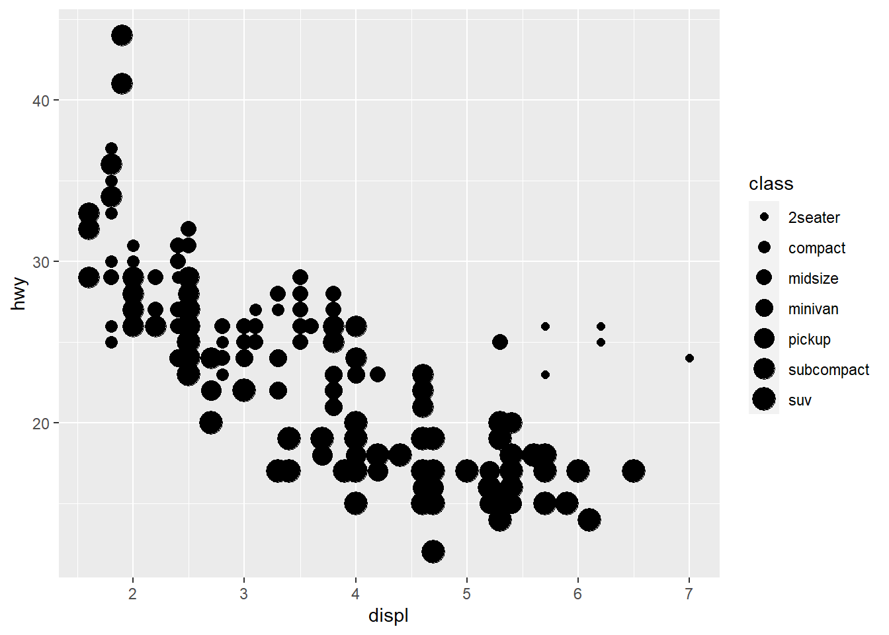
Poderíamos ainda associar class à transparência alpha, como já apresentado na Semana 1 - Aula 1, ou a formato.
ggplot(data = mpg) +
geom_point(mapping = aes(x = displ, y = hwy, alpha = class))## Warning: Using alpha for a discrete variable is not advised.
ggplot(data = mpg) +
geom_point(mapping = aes(x = displ, y = hwy, shape = class))## Warning: The shape palette can deal with a maximum of 6 discrete values
## because more than 6 becomes difficult to discriminate; you have
## 7. Consider specifying shapes manually if you must have them.## Warning: Removed 62 rows containing missing values (geom_point).
Pela análise do gráfico acima ficamos pensando o que acontece com as SUV’s, notamos assim que temos apenas 6 tipos de shapes para nossas variáveis e os demais grupos ficam de fora da classificação.
Uma vez definido as características estéticas (aes) a seleção dos demais atributos como a paleta de cores será automaticamente definida pelo ggplot2.
Se definirmos a cor como blue por exemplo, não temos ganho de informação no nosso gráfico uma vez que ficou tudo azul.
ggplot(data = mpg) +
geom_point(mapping = aes(x = displ, y = hwy), color = "blue")
5.4.1 Facetas (subgráficos) - facets
Uma maneira de prozir múltiplos gráficos com ggplot2 é utilizar o comand facet
Para gerar gráficos de facetas com uma única variável utilize facet_wrap() e adicione os argumento que achar necessários como número de linhas ncol=2.
ggplot(data = mpg) +
geom_point(mapping = aes(x = displ, y = hwy)) +
facet_wrap(~ class, nrow = 2)
Para combinar 2 variáveis utilize facet_grid(). Desta vez o argumento é uma fórmula drv ~ cyl
ggplot(data = mpg) +
geom_point(mapping = aes(x = displ, y = hwy)) +
facet_grid(drv ~ cyl)
Se optar por gráficos não atrelados às dimensões de linhas ou colunas, use ponto (.) no lugar do nome de uma variável.
# Orientação por linha
ggplot(data = mpg) +
geom_point(mapping = aes(x = displ, y = hwy)) +
facet_grid(drv ~ .)
# Orientação por coluna
ggplot(data = mpg) +
geom_point(mapping = aes(x = displ, y = hwy)) +
facet_grid(. ~ cyl)
# Organizados em 2 linhas por class
ggplot(data = mpg) +
geom_point(mapping = aes(x = displ, y = hwy)) +
facet_wrap(~ class, nrow = 2)
5.4.2 Objetos geométricos
Observe os gráficos abaixo e vejam em que eles diferem. Obviamente um mostra pontos e o outro uma linha suavizada.
O comando comando responsável por esta diferença é o geom_COMPLEMENTO.
#install.packages("ggpubr")
library(ggpubr)## Warning: package 'ggpubr' was built under R version 4.1.1ggarrange(ggplot(data = mpg) +
geom_point(mapping = aes(x = displ, y = hwy)),
ggplot(data = mpg) +
geom_smooth(mapping = aes(x = displ, y = hwy)))## `geom_smooth()` using method = 'loess' and formula 'y ~ x'“Um
geomé um objeto geométrico que um gráfico usa para representar dados. As pessoas descrevem o geom como o tipo de gráfico que ele usa. Por exemplo, gráfico de barras usam geoms de barras, gráficos de linha usam geoms de linha … . Gráficos de dispersão quebram a tendência, eles utilizam geom de ponto. …”
“Cada função geom recebe um argumento mapping. Entretanto, nem toda estética funciona com todo geom. Você pode configurar a forma de um ponto, mas não pode configurar a”forma" de uma linha. Por outro lado, você pode configurar o tipo de linha.
mpg$drv## [1] "f" "f" "f" "f" "f" "f" "f" "4" "4" "4" "4" "4" "4" "4" "4" "4" "4"
## [18] "4" "r" "r" "r" "r" "r" "r" "r" "r" "r" "r" "4" "4" "4" "4" "f" "f"
## [35] "f" "f" "f" "f" "f" "f" "f" "f" "f" "f" "f" "f" "f" "f" "4" "4" "4"
## [52] "4" "4" "4" "4" "4" "4" "4" "4" "4" "4" "4" "4" "4" "4" "4" "4" "4"
## [69] "4" "4" "4" "4" "4" "4" "r" "r" "r" "4" "4" "4" "4" "4" "4" "4" "4"
## [86] "4" "4" "4" "4" "4" "r" "r" "r" "r" "r" "r" "r" "r" "r" "f" "f" "f"
## [103] "f" "f" "f" "f" "f" "f" "f" "f" "f" "f" "f" "f" "f" "f" "f" "f" "f"
## [120] "f" "f" "f" "4" "4" "4" "4" "4" "4" "4" "4" "4" "4" "4" "4" "r" "r"
## [137] "r" "4" "4" "4" "4" "f" "f" "f" "f" "f" "f" "f" "f" "f" "4" "4" "4"
## [154] "4" "f" "f" "f" "f" "f" "4" "4" "4" "4" "4" "4" "4" "4" "4" "4" "4"
## [171] "4" "4" "4" "4" "4" "4" "4" "4" "4" "f" "f" "f" "f" "f" "f" "f" "f"
## [188] "f" "f" "f" "f" "f" "f" "f" "f" "f" "f" "f" "4" "4" "4" "4" "4" "4"
## [205] "4" "4" "4" "f" "f" "f" "f" "f" "f" "f" "f" "f" "f" "f" "f" "f" "f"
## [222] "f" "f" "f" "f" "f" "f" "f" "f" "f" "f" "f" "f" "f"ggplot(data = mpg) +
geom_smooth(mapping = aes(x = displ, y = hwy, linetype = drv))## `geom_smooth()` using method = 'loess' and formula 'y ~ x'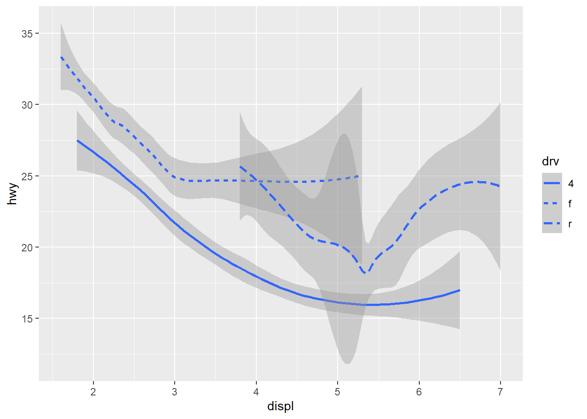
# 4 = tração 4x4
# f = tração dianteira
# r = tração traseiraggplot2 tem mais de 30 geoms clique aqui e confira.
ggplot2 vai automaticamente agrupar os dados para esses geoms de qualquer mapeamento estético para variável discreta.
Podemos utilizar o argumento group com uma variável para agrupar vários objetos.
ggarrange(ggplot(data = mpg) +
geom_smooth(mapping = aes(x = displ, y = hwy)),
ggplot(data = mpg) +
geom_smooth(mapping = aes(x = displ, y = hwy, group = drv)),
ggplot(data = mpg) +
geom_smooth(
mapping = aes(x = displ, y = hwy, color = drv),
show.legend = FALSE), ncol=3)## `geom_smooth()` using method = 'loess' and formula 'y ~ x'
## `geom_smooth()` using method = 'loess' and formula 'y ~ x'
## `geom_smooth()` using method = 'loess' and formula 'y ~ x'Para exibir mais de um geom no mesmo gráfico você pode combiná-los.
ggplot(data = mpg) +
geom_point(mapping = aes(x = displ, y = hwy)) +
geom_smooth(mapping = aes(x = displ, y = hwy))## `geom_smooth()` using method = 'loess' and formula 'y ~ x'
Nesse caso há uma duplicação de informações e caso queira fazer alterações em uma variável e esquecesse a outra poderia ter problemas. Por isso podemos evitar repetições combinando os geoms. Veja que temos o mesmo gráfico sem tantos argumentos.
ggplot(data = mpg, mapping = aes(x = displ, y = hwy)) +
geom_point() +
geom_smooth()## `geom_smooth()` using method = 'loess' and formula 'y ~ x'
O ggplot2 tratará os mapeamentos locais para cada camada caso determine mapeamentos em função de geom possibilitando exibir estéticas diferentes.
ggplot(data = mpg, mapping = aes(x = displ, y = hwy)) +
geom_point(mapping = aes(color = class)) +
geom_smooth()## `geom_smooth()` using method = 'loess' and formula 'y ~ x' Podemos utilizar a mesma ideia para especificar um conjunto de dados diferentes para cada camada. No exemplo abaixo a linha exibe o comportamento de um outro banco de dados.
Podemos utilizar a mesma ideia para especificar um conjunto de dados diferentes para cada camada. No exemplo abaixo a linha exibe o comportamento de um outro banco de dados.
ggplot(data = mpg, mapping = aes(x = displ, y = hwy)) +
geom_point(mapping = aes(color = class)) +
geom_smooth(data = filter(mpg, class == "subcompact"), se = FALSE)## `geom_smooth()` using method = 'loess' and formula 'y ~ x'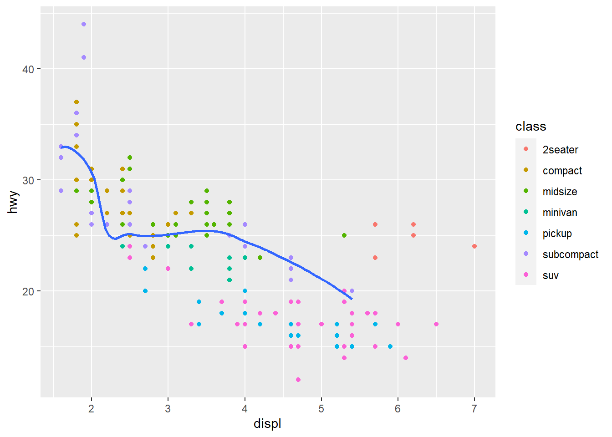
5.4.3 Transformações estatísticas
5.4.3.1 Gráfico de barras
Número total de diamantes agrupados por cut. É aquele conjunto de dados de diamantes que trabalhamos nas aulas anteriores, mas agora com outras variáveis além de price, carat e clarity. Agora temos também color e cut.
No eixo x temos cut e no y temos count mesmo não sendo uma variável de diamonds.
Esta figura mostra como funciona a transformação para produção do gráfico de barras utilizando o algorítimo stat.
{kind=link}
str(diamonds)## tibble [53,940 x 10] (S3: tbl_df/tbl/data.frame)
## $ carat : num [1:53940] 0.23 0.21 0.23 0.29 0.31 0.24 0.24 0.26 0.22 0.23 ...
## $ cut : Ord.factor w/ 5 levels "Fair"<"Good"<..: 5 4 2 4 2 3 3 3 1 3 ...
## $ color : Ord.factor w/ 7 levels "D"<"E"<"F"<"G"<..: 2 2 2 6 7 7 6 5 2 5 ...
## $ clarity: Ord.factor w/ 8 levels "I1"<"SI2"<"SI1"<..: 2 3 5 4 2 6 7 3 4 5 ...
## $ depth : num [1:53940] 61.5 59.8 56.9 62.4 63.3 62.8 62.3 61.9 65.1 59.4 ...
## $ table : num [1:53940] 55 61 65 58 58 57 57 55 61 61 ...
## $ price : int [1:53940] 326 326 327 334 335 336 336 337 337 338 ...
## $ x : num [1:53940] 3.95 3.89 4.05 4.2 4.34 3.94 3.95 4.07 3.87 4 ...
## $ y : num [1:53940] 3.98 3.84 4.07 4.23 4.35 3.96 3.98 4.11 3.78 4.05 ...
## $ z : num [1:53940] 2.43 2.31 2.31 2.63 2.75 2.48 2.47 2.53 2.49 2.39 ...ggplot(data = diamonds) +
geom_bar(mapping = aes(x = cut))
Podemos analisar qual stat cada geom utiliza entrando com os comando adequados (geom_bar() usa stat_count())
geom_bar()## geom_bar: width = NULL, na.rm = FALSE, orientation = NA
## stat_count: width = NULL, na.rm = FALSE, orientation = NA
## position_stackstat_count()## geom_bar: na.rm = FALSE, orientation = NA, width = NULL
## stat_count: na.rm = FALSE, orientation = NA, width = NULL
## position_stackggplot(data = diamonds) +
stat_count(mapping = aes(x = cut)) Podemos alterar o mapeamento padrão de variáveis transformadas para estética. Exibir um gráfico de barras de proporção, em vez de count.
Podemos alterar o mapeamento padrão de variáveis transformadas para estética. Exibir um gráfico de barras de proporção, em vez de count.
ggplot(data = diamonds) +
geom_bar(
mapping = aes(x = cut, y = stat(prop), group = 1)
)
Um pouco mais de detalhe.
ggplot(data = diamonds) +
stat_summary(
mapping = aes(x = cut, y = depth),
fun.min = min,
fun.max = max,
fun = median
)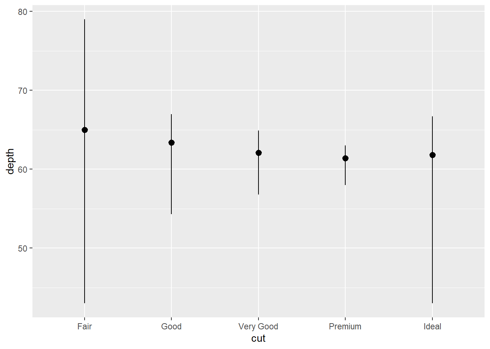
?stat_bin para mais informações sobre os mais de 20 stats.
5.4.3.2 Ajustes de Posição
Você também pode colorir as barras do gráficos utilizando o argumento estético color ou fill.
ggarrange(ggplot(data = diamonds) +
geom_bar(mapping = aes(x = cut, colour = cut)),
ggplot(data = diamonds) +
geom_bar(mapping = aes(x = cut, fill = cut)))Se alternar e coloar fill=clarity as barras ficam empilhadas.
ggplot(data = diamonds) +
geom_bar(mapping = aes(x = cut, fill = clarity))
O empilhamento acontece automaticamente pelo ajuste de posição. Se você não quiser o gráfico empilhado, pode usar ma outra opção como identity, dodge ou fill.
ggplot(data = diamonds) +
geom_bar(mapping = aes(x = cut, fill = clarity), position = "dodge")
ggplot(data = diamonds) +
geom_bar(mapping = aes(x = cut, fill = clarity), position = "identity")ggplot(data = diamonds) +
geom_bar(mapping = aes(x = cut, fill = clarity), position = "fill")ggarrange(ggplot(data = diamonds, mapping = aes(x = cut, fill = clarity)) +
geom_bar(alpha = 1/5, position = "identity"),
ggplot(data = diamonds, mapping = aes(x = cut, colour = clarity)) +
geom_bar(fill = NA, position = "identity"), ncol=2)Para gráficos de dispersão podemos utilizar position=jitter que adiciona um pouco de ruído no espalhamento dos pontos.
ggarrange(ggplot(data=mpg)+
geom_point(mapping=aes(x=displ, y=hwy)),
ggplot(data = mpg) +
geom_point(mapping = aes(x = displ, y = hwy), position = "jitter"))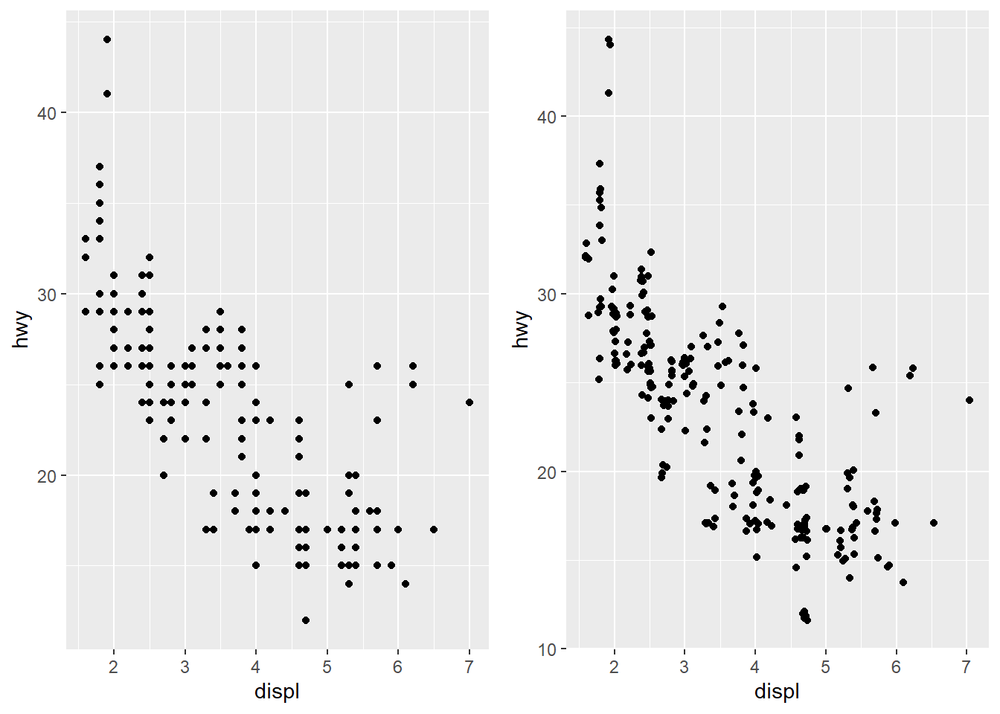
Para saber mais sobre ajuste de posição ?position_dodge,?position_fill,?position_identity,?position_jitter,?position_stack.
5.4.4 Sistema de coordenadas
O sistema de coordenadas padrão do ggplot2 é cartesiano (x e y agem independentemente para encontrar a localização de cada ponto).
cord_flip alterna os eixos x e y.
ggarrange(ggplot(data = mpg, mapping = aes(x = class, y = hwy)) +
geom_boxplot(),
ggplot(data = mpg, mapping = aes(x = class, y = hwy)) +
geom_boxplot() +
coord_flip())coord_quickmap() ajusta a tela para mapas.
nz <- map_data("nz")
ggplot(nz, aes(long, lat, group = group)) +
geom_polygon(fill = "white", colour = "black")
ggplot(nz, aes(long, lat, group = group)) +
geom_polygon(fill = "white", colour = "black") +
coord_quickmap()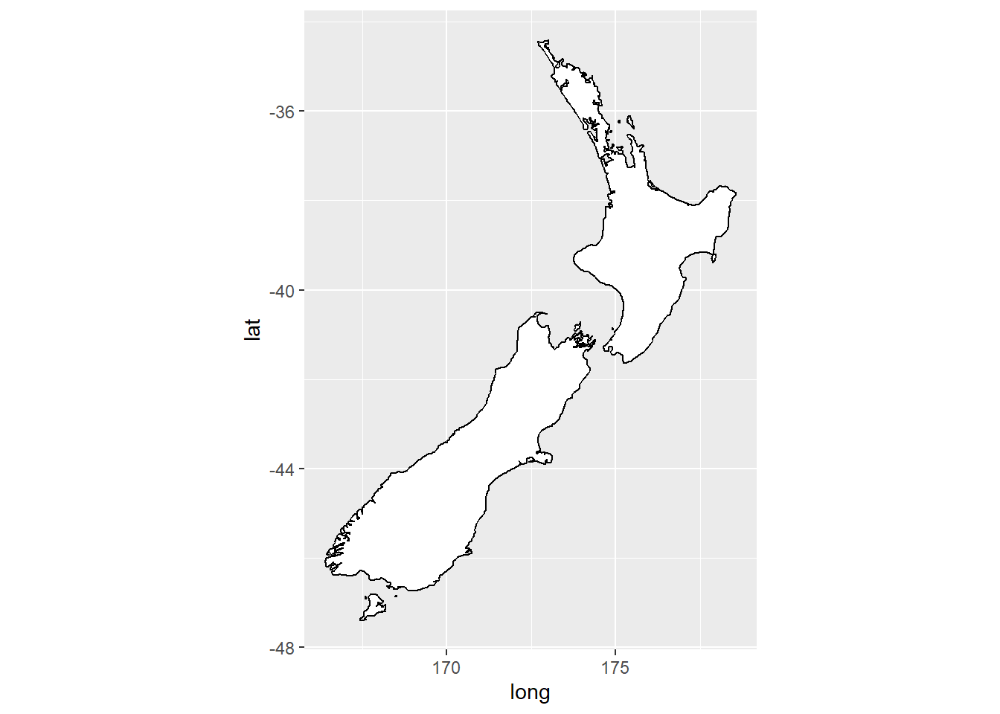
Experimente alternar os temas.

gg<-ggplot(nz, aes(long, lat, group = group)) +
geom_polygon(fill = "white", colour = "black")+
coord_quickmap()
gg + theme_light()gg + theme_minimal()
gg + theme_classic()coord_polar() usa coordendas polares.
bar <- ggplot(data = diamonds) +
geom_bar(
mapping = aes(x = cut, fill = cut),
show.legend = FALSE,
width = 1
) +
theme(aspect.ratio = 1) +
labs(x = NULL, y = NULL)
ggarrange(bar + coord_flip(),
bar + coord_polar())5.4.5 Rótulos
5.4.5.1 Título, subtítulo e caption (canto inferior direito).
ggplot(mpg, aes(displ, hwy)) +
geom_point(aes(color = class)) +
geom_smooth(se = FALSE) +
labs(title = "Fuel efficiency generally decreases with engine size")## `geom_smooth()` using method = 'loess' and formula 'y ~ x'
ggplot(mpg, aes(displ, hwy)) +
geom_point(aes(color = class)) +
geom_smooth(se = FALSE) +
labs(
title = "Fuel efficiency generally decreases with engine size",
subtitle = "Two seaters (sports cars) are an exception because of their light weight",
caption = "Data from fueleconomy.gov"
)## `geom_smooth()` using method = 'loess' and formula 'y ~ x'Podemos tambpem usar labs() para renomear os eixos.
ggplot(mpg, aes(displ, hwy)) +
geom_point(aes(colour = class)) +
geom_smooth(se = FALSE) +
labs(
x = "Engine displacement (L)",
y = "Highway fuel economy (mpg)",
colour = "Car type"
)## `geom_smooth()` using method = 'loess' and formula 'y ~ x'5.4.5.2 Anotações
Podemos rotular as observações do gráfico com geom_text().
best_in_class <- mpg %>%
group_by(class) %>%
filter(row_number(desc(hwy)) == 1)
ggplot(mpg, aes(displ, hwy)) +
geom_point(aes(colour = class)) +
geom_text(aes(label = model), data = best_in_class)Melhorando a visualização 1.
ggplot(mpg, aes(displ, hwy)) +
geom_point(aes(colour = class)) +
geom_label(aes(label = model), data = best_in_class, nudge_y = 2, alpha = 0.5)Melhorando a visualização 2.
ggplot(mpg, aes(displ, hwy)) +
geom_point(aes(colour = class)) +
geom_point(size = 3, shape = 1, data = best_in_class) +
ggrepel::geom_label_repel(aes(label = model), data = best_in_class)Alterando os rótulos das legendas (legend.position=none).
Rótulos diretamente no gráfico.
class_avg <- mpg %>%
group_by(class) %>%
summarise(
displ = median(displ),
hwy = median(hwy)
)
ggplot(mpg, aes(displ, hwy, colour = class)) +
ggrepel::geom_label_repel(aes(label = class),
data = class_avg,
size = 6,
label.size = 0,
segment.color = NA
) +
geom_point() +
theme(legend.position = "none")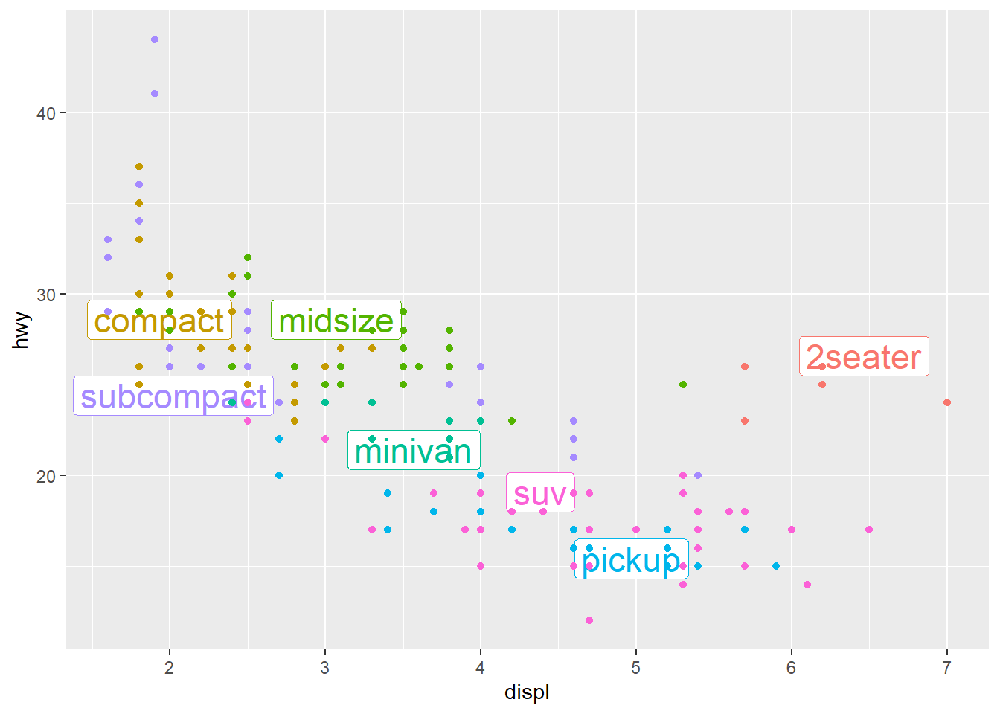
Adicionando um único rótulos aos gráficos (geom_text()).
Note o ajuste de hjust e vjust.

label <- mpg %>%
summarise(
displ = max(displ),
hwy = max(hwy),
label = "Increasing engine size is \nrelated to decreasing fuel economy."
)
ggplot(mpg, aes(displ, hwy)) +
geom_point() +
geom_text(aes(label = label), data = label, vjust = "top", hjust = "right")# Texto exatamente nas bordas use -inf e +Inf
label <- tibble(
displ = Inf,
hwy = Inf,
label = "Increasing engine size is \nrelated to decreasing fuel economy."
)
ggplot(mpg, aes(displ, hwy)) +
geom_point() +
geom_text(aes(label = label), data = label, vjust = "top", hjust = "right")5.4.6 Eixos
Podemos alterar os eixos e os intervalos dos eixos (x e y).
No exemplo abaixo vamos utilizar scale_y_continuous para habilitar a edição do eixo y e determinar seus limites (limits=) e intervalos (breaks).
p<-ggplot(mpg, aes(displ, hwy)) +
geom_point() +
scale_y_continuous(breaks = seq(5,45,5), limits = c(5,45))
pPara adicionar um eixo y secundário precisamos utilizar o argumento sec.axis dentro de scale_y_continuous.
p <- ggplot(mpg, aes(x = displ))+
geom_point(aes(y = hwy, colour = "hwy"))+
geom_line(aes(y = cty, colour = "cty"))+
scale_y_continuous(sec.axis = sec_axis(~ . , name = "cty", seq(1,1000,10)))+
scale_colour_manual(values = c("green", "red"))+
labs(y = "hwy",x = "displ",colour = "Legenda")+
theme(legend.position = c(0.8, 0.9))
p5.4.7 Escalas
Uma outra forma de melhorar o aspecto de nosso gráfico é alterando as escalas que são automaticamente geradas. breaks() e label.breaks() controlam a posição das marcas ou os valores associados.
ggarrange(ggplot(mpg, aes(displ, hwy)) +
geom_point(aes(colour = class)),
ggplot(mpg, aes(displ, hwy)) +
geom_point(aes(colour = class)) +
scale_x_continuous() +
scale_y_continuous() +
scale_colour_discrete(),
ggplot(mpg, aes(displ, hwy)) +
geom_point() +
scale_y_continuous(breaks = seq(15, 40, by = 5)), ncol=2)## $`1`
##
## $`2`##
## attr(,"class")
## [1] "list" "ggarrange"Pode determinar labels=NULL para omitir os rótulos.
ggplot(mpg, aes(displ, hwy)) +
geom_point() +
scale_x_continuous(labels = NULL) +
scale_y_continuous(labels = NULL)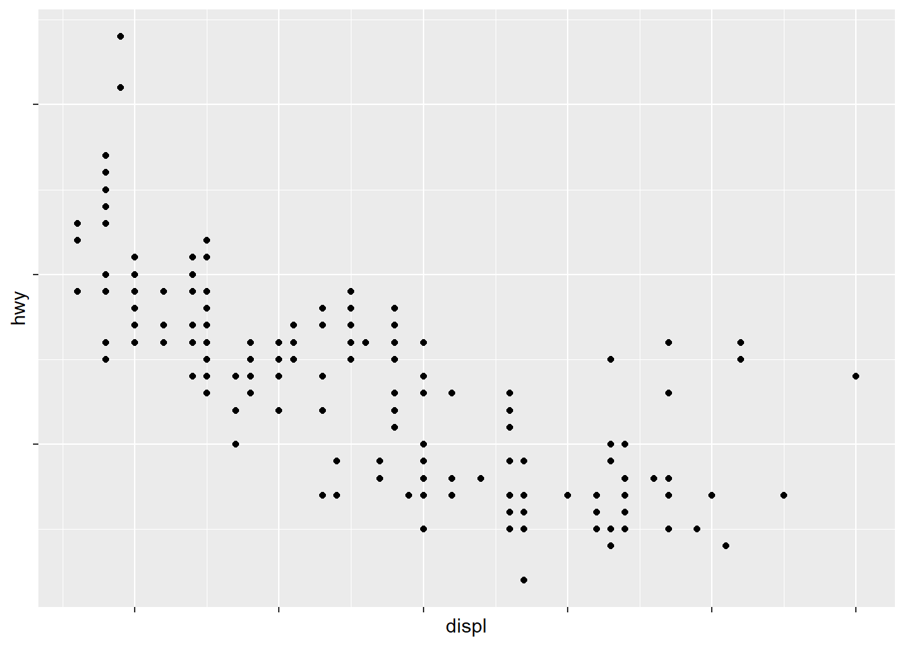
breaks() também pode destacar exatamente onde as observações ocorreram.
# Quando cada presidente americano começou e terminou seu mandato
presidential %>%
mutate(id = 33 + row_number()) %>%
ggplot(aes(start, id)) +
geom_point() +
geom_segment(aes(xend = end, yend = id)) +
scale_x_date(NULL, breaks = presidential$start, date_labels = "'%y")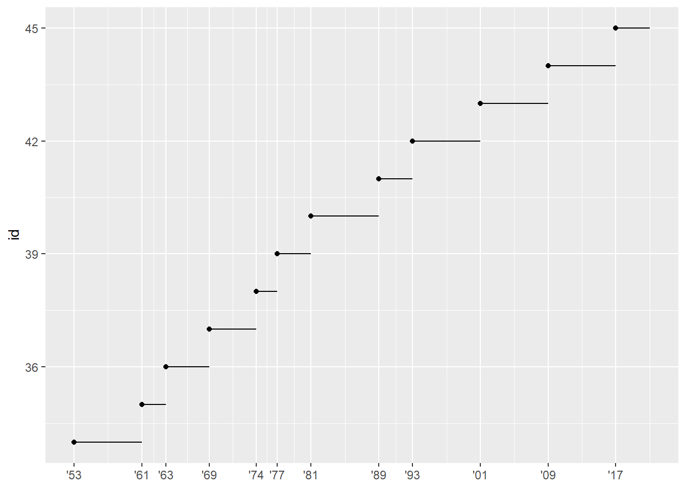
5.4.8 layout da legenda
Para controlar a posição da legenda precismos da função theme() que controla as partes sem dados do gráfico. legend.position()controla onde a legenda será desenhada.
base <- ggplot(mpg, aes(displ, hwy)) +
geom_point(aes(colour = class))
ggarrange(base + theme(legend.position = "left"),
base + theme(legend.position = "top"),
base + theme(legend.position = "bottom"),
base + theme(legend.position = "right"),ncol=2, nrow=2) # the defaultPara controlar a exibição das legendas use guides() junto de gui_legend() ou guide_colorbar().
O exemplo abaixo temos nrow=1 controla número de linhas da legenda.
ggplot(mpg, aes(displ, hwy)) +
geom_point(aes(colour = class)) +
geom_smooth(se = FALSE) +
theme(legend.position = "bottom") +
guides(colour = guide_legend(nrow = 1, override.aes = list(size = 4)))## `geom_smooth()` using method = 'loess' and formula 'y ~ x'#> `geom_smooth()` using method = 'loess' and formula 'y ~ x'5.4.8.1 Substituindo uma escala.
Se vezes não queremos ajustar uma escala, mas queremos substituí-la.
Temos abaixo a relação de carat e price em escala logarítimica facilitando a visualização.
ggarrange(ggplot(diamonds, aes(carat, price)) +
geom_bin2d(),
ggplot(diamonds, aes(log10(carat), log10(price))) +
geom_bin2d(),ncol=2)A desvantagem é que os eixos estão rotulados com os valores transformados. Assim, em vez de fazer trasnformação no mapeamentos podemos fazê-la na escala.
ggplot(diamonds, aes(carat, price)) +
geom_bin2d() +
scale_x_log10() +
scale_y_log10()Outra escala frequentemente customizada é a cor.
ggarrange(ggplot(mpg, aes(displ, hwy)) +
geom_point(aes(color = drv)),
ggplot(mpg, aes(displ, hwy)) +
geom_point(aes(color = drv)) +
scale_colour_brewer(palette = "Set1"), ncol=2)ggplot(mpg, aes(displ, hwy)) +
geom_point(aes(color = drv, shape = drv)) +
scale_colour_brewer(palette = "Set1")presidential %>%
mutate(id = 33 + row_number()) %>%
ggplot(aes(start, id, colour = party)) +
geom_point() +
geom_segment(aes(xend = end, yend = id)) +
scale_colour_manual(values = c(Republican = "red", Democratic = "blue"))5.4.9 Dando zoom
Há 3 formas de controlar os limites do gráfico.
1 - ajustando os dados do gráfico.
2 - Configurando limites em cada escala.
3 - Configurando xlim e ylimem coord_cartesian()).
ggplot(mpg, mapping = aes(displ, hwy)) +
geom_point(aes(color = class)) +
geom_smooth() +
coord_cartesian(xlim = c(5, 7), ylim = c(10, 30))## `geom_smooth()` using method = 'loess' and formula 'y ~ x'mpg %>%
filter(displ >= 5, displ <= 7, hwy >= 10, hwy <= 30) %>%
ggplot(aes(displ, hwy)) +
geom_point(aes(color = class)) +
geom_smooth()## `geom_smooth()` using method = 'loess' and formula 'y ~ x'Extraindo classes de carro e fazendo gráficos delas separadamente deixa difícil a comparação uma vez que cada um tem sua escala.
suv <- mpg %>% filter(class == "suv")
compact <- mpg %>% filter(class == "compact")
ggarrange(ggplot(suv, aes(displ, hwy, colour = drv)) +
geom_point(),
ggplot(compact, aes(displ, hwy, colour = drv)) +
geom_point(), ncol=2)Podemos superar isso formatando as escalas com os limites de todos os gráficos.
x_scale <- scale_x_continuous(limits = range(mpg$displ))
y_scale <- scale_y_continuous(limits = range(mpg$hwy))
col_scale <- scale_colour_discrete(limits = unique(mpg$drv))
ggplot(suv, aes(displ, hwy, colour = drv)) +
geom_point() +
x_scale +
y_scale +
col_scaleggplot(compact, aes(displ, hwy, colour = drv)) +
geom_point() +
x_scale +
y_scale +
col_scale5.5 Para mais informações utilize o Google ou os documentos abaixo
Articles - ggpubr: Publication Ready Plots
R is Getting an Official Pipe Operator
Draw Composition of Plots Using the patchwork Package in R (3 Examples)